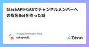
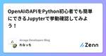
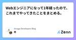

Arsaga Developers Blogのフィード
https://zenn.dev/p/arsaga
アルサーガパートナーズ株式会社のエンジニアによるテックブログです。
フィード

SlackAPI+GASでチャンネルメンバーへの指名Botを作った話
Arsaga Developers Blogのフィード
こんばんは！今日は社内でのちょっとした活動に関して記録を残したく少しニッチなお話ですとある日の事でしたマネージャー：Tips共有チャンネルを指名制にしたいんだよね〜※当社ではTipsを気軽に発言する（してほしい）チャンネルが設けられています勉強になることがとても多いので、メンバーからの発信頻度を増やしたい狙いがありますこの一言で私の密かなプロジェクトが始動しました やりたい事Tips共有チャンネルに所属しているメンバーからランダムに1名選抜し指名をするBotを作成せよ 要件をまとめるTips共有チャンネルに所属しているメンバーからランダムに1名選抜する選抜さ...
2日前

OpenAIのAPIをPython初心者でも簡単にできるJupyterで挙動確認してみよう！ 1
1
Arsaga Developers Blogのフィード
はじめに実務でFastAPIにて、OpenAIのAPI関連の実装をしている私の備忘録です。FastAPIについては載っておりません。読んでいただきたい方・ポートフォリオでAI機能つけたい方・OpenAIのAPI気になるけど難しいんでしょ・・・な方ぜひ、ご自分の環境で試され、実装して欲しいです。Pythonが初めての方でも、環境構築せずにUI上でPythonのコードを実行することができるJupyterを採用しております。 使用技術下記、バージョンにて動作確認致しました。バージョンを合わせて実行してください。Python33.11OpenAIのAPI...
5日前

Webエンジニアになって1年経ったので、これまでやってきたことをまとめる。 2
Arsaga Developers Blogのフィード
始めに今年の2月でWebエンジニアになって1年経ちました。1年経ったらもっと凄いWebエンジニアになっていると思っていたのですが、全くそんなことはなく……。ただそれでも、この1年はこれまでの社会人生活よりも、色々なことにチャレンジしてきました。今回はこの1年で行ってきたことをまとめてみたいと思います。誰かの参考になりましたら幸いです。 Laravelのキャッチアップ。私はスクールでRailsを学び、その後現在の会社に入社しました。会社はメイン言語がLaravelだった為、まずPHPとLaravelのキャッチアップが必要でした。会社では研修があったのですが、私はあ...
13日前

問題解決のフレームワークについて社内で勉強会をした話
Arsaga Developers Blogのフィード
問題解決のフレームワーク私はエンジニア兼DXコンサルとして現在働いていまして、エンジニアとコンサルとで頭の動かし方がだいぶ違うなと感じていました。このままでは両者の溝は深まるばかりだと思い、コンサルが使うフレームワークの中でも汎用的な「問題解決のフレームワーク」について、エンジニア向けに社内で勉強会をしました。概略を図にすると以下のような感じです。このフレームワークを理解すれば、正しい質問ができるようになります。この記事では、問題を解決するための正しい質問とは何なのかについてまとめました。おかしな点がありましたらコメントいただければ幸いです。 よくある間違い 「どう」あ...
1ヶ月前
新卒１年目でSupabaseデビューした話
Arsaga Developers Blogのフィード
はじめに皆さんこんにちは、熊本でエンジニアをしているハラダです。新卒１年目の僕が実務で「Supabase」を使用したので、感想を共有したいと思います。Supabaseとは？https://supabase.com/Supabaseは、主にバックエンドの機能を提供するプラットフォームです。オープンソースで多くのバックエンド機能を提供しており、Firebaseの代替として利用されます。具体的には、以下の機能を提供しています:・ データベースの管理・ リアルタイムのデータ同期・ 認証機能・ ストレージ・ エッジ処理これらの機能を利用することで、開発者は簡単にアプリ...
1ヶ月前
CookieのSecure属性を有効にしましょうという話
Arsaga Developers Blogのフィード
こんばんは！引き続きセキュリティ対策についてのまとめです本日は「CookieのSecure属性を有効にしておこう」という話ですまず初めに... CookieのSecure属性とは何かこれは、「HTTPS通信時のみCookieを送信する」という設定です。この対策をしていないと、平文HTTP通信でもCookieを送信する様になっています。これでは第三者が盗聴できる状態であることを指しますので、セッションハイジャックの危険性も高まることを意味しています。ざっくりとご理解いただけましたでしょうか？では... どんな被害があるのか、なぜ対策すべきなのかについて纏めていきま...
2ヶ月前
LaravelのPolicyに関して、初歩的な事で躓いたのでまとめてみた。
Arsaga Developers Blogのフィード
始めに今回業務でLaravelのPolicyを利用して認可処理の実装を行いました。ただドキュメントを読んだ際に、初歩的な部分がわかっておらず、実装の際に詰まることが多かったです。そこで今回は本当に初歩的な内容なのですが、Policyに関してまとめたいと思います。 設計今回使用している技術は以下になります。(一部)laravel 9.44.0PHP 8.1.8Composer 2.4.4MySQL 8.0.28今回は例として、図書館のスタッフと図書館の情報が保存されているテーブルがあり、図書館のスタッフを登録・編集・削除を行う際と、図書館の情報編集は、管理者...
2ヶ月前
DIと単体テストと私: 緩やかな依存関係がもたらすメリット
Arsaga Developers Blogのフィード
はじめにこの記事は、アルサーガパートナーズ アドベントカレンダー2023、番外編の記事です。「25日間のリレー」を成功に導いた素敵な記事たちがカレンダーに集まっていますので、よろしければ下記のリンクからご覧ください！https://qiita.com/advent-calendar/2023/arsaga!なお、この記事で挙げられている実装例は、(たとえこの記事がクリスマスに公開されていて、筆者がその直前に執筆作業に取り組んでいたとしても、)あくまでフィクションであり、 実際の人物や状況とは一切関係ありません。 この記事について 実務における最初の壁: DI未経...
3ヶ月前
一度自然消滅したテックブログを復活させてみて
Arsaga Developers Blogのフィード
!この記事は Arsaga 🎅🏻 Advent Calendar 2023 の 25日目の記事です。こんにちは、アルサーガパートナーズ株式会社のbariです。ネイティブアプリのエンジニア兼エンジニアマネージャーをやっています。ブログにタイトルにある通りで今年、2023年春頃に私達は自然消滅していた会社のテックブログを復活させました。アドベントカレンダーの最終日で今年の節目となる日に少しその事について書きたいと思います。これからテックブログを始めようと思われている方や、会社としてテックブログが無いけど提案してみたいと思われているような方の参考になれば幸いです。 なぜテック...
3ヶ月前
お父さん、バービーを買ってよ！: 本当に欲しいクリスマスプレゼントのために提案書をつくろう
Arsaga Developers Blogのフィード
提供https://qiita.com/advent-calendar/2023/arsaga 誰だって……クリスマスプレゼントには本当に欲しかったおもちゃが欲しい。たしかに、大切な人からもらったものはそれだけで特別な価値がある。とは言え、レゴブロックのお城を望んでいたにも関わらず、実際にもらったものが双眼鏡では正直子供心に「………」という感じだろう（実体験）。だが、単に「買ってよ！！！」とグズるだけでは買ってもらえないこともある。大人だって先方に「契約してよ！！！」とグズったところで契約してもらえるわけがない。そこで、きちんとした提案書を用意して望む必要がある。というわけ...
3ヶ月前
🥇Golden Testを導入してUI開発の不安を解消する
Arsaga Developers Blogのフィード
!本記事はArsaga 🎅🏻 Advent Calendar 2023の23日目の記事です。https://qiita.com/advent-calendar/2023/arsaga はじめにFlutter好きの皆さんこんにちは！アルサーガパートナーズ株式会社でFlutterエンジニアをしているtaiseiです！突然ですが皆さん、FlutterでUIの開発を進める中で、「このUIはどんなデバイスでも適切に表示されるのだろうか..?」と不安に感じたことはありませんか？レスポンシブデザインはもちろんのこと、テキストのフォントや色、ダークモードの表示など複数のデバイスで複数...
3ヶ月前
Next.js14とmicroCMSでCRUDの実装
Arsaga Developers Blogのフィード
概要Next.js14がリリースされたので、CRUDの動作確認までやってみました。安定版になったServerActionsもお試しで使ってます。内容はNext.js × microCMSでシンプルなTodoAppの作成です。 環境macOS: 14.1Next.js: 14.0.2Node.js: 18.18.2 プロジェクトの作成下記のコマンドを実行してプロジェクトを作成します。npx create-next-app@latestServerActionsを試すため、AppRouterを使用します。✔ What is your project named...
3ヶ月前
AIと音声会話する Python × Whisper API × ChatGPT API × VOICEVOX 〜バックエンド編〜
Arsaga Developers Blogのフィード
!こちらの記事は、アルサーガーパートナーズアドベントカレンダーの22日目の参加記事です。他の記事は下記リンクをご参照ください。https://qiita.com/advent-calendar/2023/arsaga はじめに今回は、AIと音声で会話するアプリのバックエンド側の実装を行なったので、その時に学んだことを記事にして共有してます。構成フローとしては、マイクからの音声入力を、Whisper APIを使用して音声からテキストに変換、chatGTPから得られた返答をVOICEVOXを使用して、音声に変換してます。 アプリケーション概要今回実装したソースコードは...
3ヶ月前
DDD(ドメイン駆動設計)の概要をまとめてみた
Arsaga Developers Blogのフィード
!こちらの記事は、アルサーガーパートナーズアドベントカレンダーの21日目の参加記事です。他の記事は下記リンクをご参照ください。https://qiita.com/advent-calendar/2023/arsaga はじめにエンジニア歴１年未満の新米です！最近、DDDを用いた開発に携わることになったため、アウトプットを兼ねてこちらの記事にまとめていきたいと思います！DDDってなんぞや？って方が、この記事を読んで少しでも理解していただけたら幸いです・・・！ DDDとはDomain-Driven Design(ドメイン駆動設計)は、エリック・エヴァンスが開発したソフ...
3ヶ月前
Laravelのfactoryで使用されるstateメソッドに関して学ぶ。
Arsaga Developers Blogのフィード
始めに!こちらの記事は、アルサーガーパートナーズアドベントカレンダーの20日目の参加記事です。他の記事は下記リンクをご参照ください。https://qiita.com/advent-calendar/2023/arsaga今携わっている案件では沢山のテストデータを作成する必要があります。けれど私はfactoryでデータを作成する際に、効率とかを考えずに、結構適当にデータを作成していました。しかしそんな時stateメソッドというものを使用して、データを作成している方がおられました。なんだか便利そうなメソッドです。今回はそのメソッドに関して、学びたいと思います。...
3ヶ月前
Next.js × Auth.js(NextAuth) × Cognitoでカスタムログイン画面を作成しセッション管理をする
Arsaga Developers Blogのフィード
!こちらの記事は、アルサーガーパートナーズアドベントカレンダーの19日目の参加記事です。他の記事は下記リンクをご参照ください。https://qiita.com/advent-calendar/2023/arsaga 環境ライブラリ・フレームワーク・言語バージョンnext13.4.19react18.2.0react-dom18.2.0typescript5.2.2next-auth4.24.5@aws-sdk/client-cognito-identity-provider3.454.0※Next.js...
3ヶ月前
VNet統合、プライベートエンドポイント、サービスエンドポイントについて(App Service、Azure Database)
Arsaga Developers Blogのフィード
前書き弊社ではAWSを用いた開発をメインで行っておりますが、ChatGPTを用いたプロダクトの提供に伴い、お客様からAzure OpenAIかつAzureでの開発を要望される機会が増えました。Azureでは、以下のようにWeb App for Containers(以降、App Service )とAzure Database for PostgreSQL(以降、DB)を利用した構成を取ったのですが、特に、VNet統合とプライベートエンドポイントの使い方がApp ServiceとDBで異なり、頭がこんがらがったので整理しました。※ 目下Azureと格闘中なので、正確でない情報が...
3ヶ月前
Reactで列固定のテーブルを作りたいけど、良い方法が見つからない・・・盲点からの脱出法
Arsaga Developers Blogのフィード
!こちらの記事は、アルサーガーパートナーズアドベントカレンダーの16日目の参加記事です。他の記事は下記リンクをご参照ください。https://qiita.com/advent-calendar/2023/arsaga「列固定のテーブルを作りたいけど、どうすりゃ良いんだ・・・」（こーゆうやつ）サーバーサイドエンジニアとして入社して半年、途中からフロントエンドも業務でやらせてもらってた私は会社で途方にくれていました。一つ前の案件でReactを使ってカチャカチャと画面を作っていた経験はあったので、よくあるような画面なら普通に作れると思っていたんですよね。（キレイなコードを書...
3ヶ月前
サンタが使うシステム開発：非機能要件の重要性
Arsaga Developers Blogのフィード
クリスマスのサンタクロースの話クリスマスが近づいてきました。そうです。サンタクロースの繁忙期です。サンタクロースは、世界中の子供たちに、最高のプレゼントを配らなければなりません。しかし現実問題、受け取った子供はごく一部です。ここで、サンタクロースについて紹介します。サンタクロースは、世界に120人いると言われており、平均年齢は1700歳だそうです。（諸説あり）超高齢で世界に少数しかいないサンタクロースたちが、「世界中約21億人の子供たちへプレゼントを届けよう！」と無茶な目標を掲げ、動き回るという超絶過酷な１日がクリスマスであります。ここで、サンタクロースが子供...
3ヶ月前
SwiftUIでカメラから色を取得してみる
Arsaga Developers Blogのフィード
こんなのを作ります はじめに今回はSwiftUIでAVFoundationを使用し、カメラから色を取得するアプリを作っていきます。 本記事のポイントSwiftUIでAVFoundationを使ってカメラ画面の表示カメラの映像から色を取得 使用するフレームワークAVFoundationSwiftUIUIKit AVFondationでカメラの表示 アーキテクチャ今回はVIPERアーキテクチャでカメラ機能を実装していきたいと思います。名称責務ViewPresenterから伝えられた情報の表示、ユーザーからの画面操作処理...
3ヶ月前